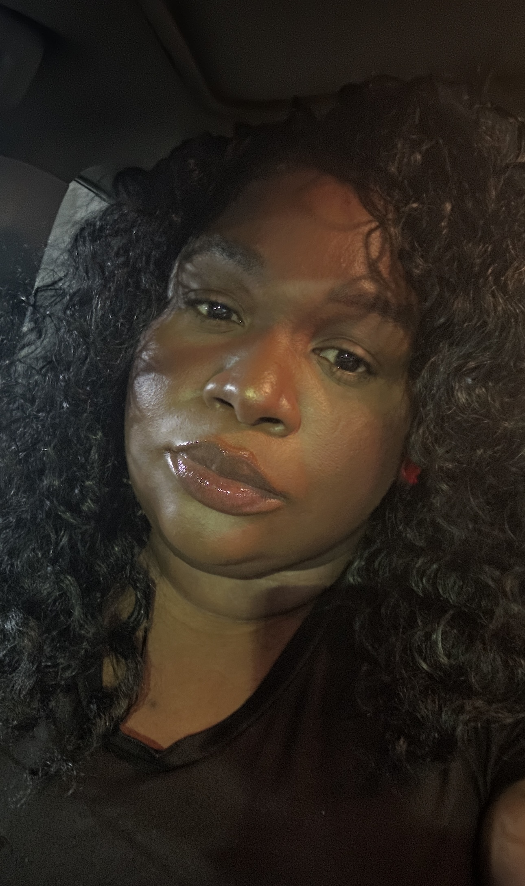

From the Desk of the Editor
I’d like to extend another personal thank you to each and every one of you that participated. You trusted me with your thoughts enough to understand that whatever I was using it for would be something that you would be part of. If you chose not to participate, I’d like to thank you too. I don’t believe anyone should do anything they are not interested in.
When I think that I’ve found enough ways to express creativity, another way comes forth. When I got the idea to do this, I started on it immediately for fear of not executing it. This started out as an idea for a booklet that was supposed to have a digital companion. But as the idea began to really flourish in my mind, a booklet would not do it justice. Also, I realized, not quick enough since I did spend the first three and a half days working on the booklet, that a printed booklet would force me to have to make two separate documents in Canva. So, I abandoned the booklet idea and decided a site would hold what I wanted to bring to life way better.
In all of the moments that a family can experience with and without each other. In the parts of life we don’t know if we are going to survive and somehow thrive in. In the places that seem so dark when we are going through but somehow a light appears at the end.
While this is an activity that was generated for the now, I truly hope that we can become more present in the lives of the ones that we love. In the now and in the future.
This took a little over a week to accomplish. It was done using a technique called vibe-coding, which is where you direct an AI agent to write the code that you describe. So all of the ideas, including the animations, are my own. I have been experimenting with creating a digital space where my ideas can be housed and this was simply one iteration of that ongoing work.
This experience was intended to provide the participants a way to pull together moments throughout their year that would reflect their gratitude and what they are most thankful for outside of the ‘given.’ This publication was intended to house memories in a digital space and allow participants to revisit and share at their leisure. In a world where we spend a great deal of time on our phones and living digitally, this was a way to connect digitally with the family.
You’ve done a great thing. You’ve experienced something that only you can say that you have. You did a hard thing. You’ve learned a valuable lesson. You’ve started preparing for your future. You are no longer being held back. All of those things deserve a moment of applause and a moment of pause. It’s easy to overlook moments in search of a bigger and better thing. This is your reminder that even the little things, the intangible things, deserve a moment of tender reflection.
This has been a pleasure to create, and hopefully a pleasure to read.
Happy Thanksgiving!
–Tchao!!
